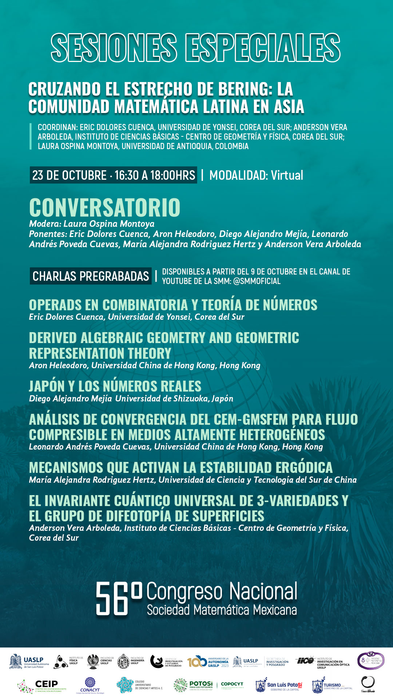

Recursos en español
-
Traducción al español de Sobre álgebras quasi triangulares quasi-Hopf y un grupo estrechamente relacionado con ...
Traducción al español del articulo "On Quasitriangular Quasi-Hopf algebras and a group closely connected with ..." de Vladimir Drinfeld.
Sobre álgebras quasi triangulares quasi-Hopf y un grupo estrechamente relacionado con .... -
Entrevista gaceta politecnica
En este link pueden ver la edicion 174 de la Selecion gaceta politecnica donde fui entrevistado.
-
El ciber espacio Mexicano
Jupyter notebook de la platica El ciberespacio mexicano" en la ESCOM. Continene recursos para crear tu propia Start Up, eh ideas sobre los centros de innovacion.
-
¿Que matemáticas se estudian en México?
En estas visualizaciones analizamos una base de datos que contiene el nombre de escuelas, temas de tesis, y fecha en que alguien se graduo de doctorado en Matemáticas en México. Primero vemos un diagrama donde uno puede elegir (a la derecha) varios temas, y vemos en que escuelas se graduo gente con tesis en esos temas. Abajo, si uno fija una escuela, se ve la cantidad de gente graduada en ese tema en esa escuela.

-
Ahora vemos una grafica mostrando la suma cumulativa del número de graduados en los temas seleccionados en todo México.
Abajo esta el mapa donde se puede ver en que lugares la gente estudia los temas.
-
Organizador y participante en la mesa redonda: Cruzando el estrecho de Bering. La comunidad matemática latina en Asia.

Invitamos a seis matemáticos latinoamericanos que trabajan en Asia para que respondan las dudas de los estudiantes.
-
El siguiente documento continene información sobre el proceso de busqueda de trabajo, adaptación a una cultura distinta, etc. Haz click para descargar la guía. La mesa redonda sera grabada y se subirá el video a youtube.
-
Currículum para una clase de ética en inteligencia artificial para estudiantes de secundaria
Haz click para abrir el enlace. (Traducción al Español junto con Antonio Arciniega Nevarez, Mariana García Prince y Karina Dolores Cuenca). Si desean imprementar este mini curso, pueden escribirnos y les responderemos sus dudas.